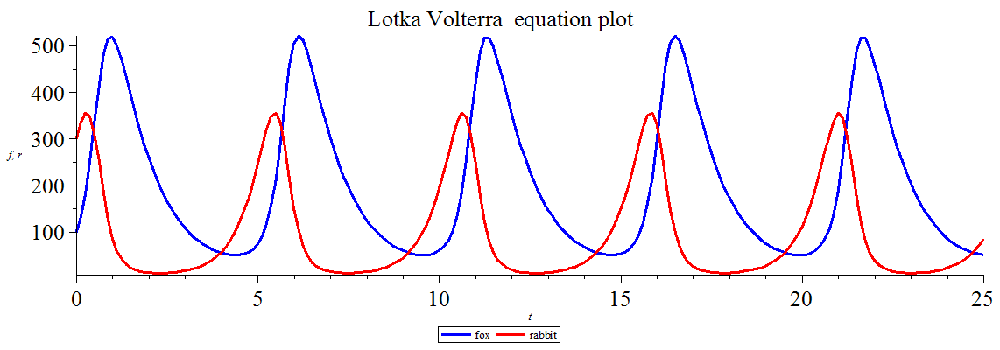

洛特卡－沃爾泰拉方程式(維基百科)：可以用於推斷獵物與掠食者之間數量變化的方程
今天的主角：
雪靴兔：此方程的獵物角色
山貓：此方程中的獵食者角色
方程式與散佈圖

其中，方程式的參數是可以改變以因應環境等外界因素變化的。
例如：將山貓的「天敵--雪豹」納入考量因素，假使雪豹的數量猛然暴增，
則山貓的死亡率(也就是方程中的δ)就會增加。
那麼讓我們假設山貓死亡率增為0.7 ，試著修改方程使數據跟著假設調整！
使新的數據再次作圖並將變化前後的掠食者數放在同張圖比較時，
我們可以發現死亡率高的掠食者曲線週期比低的要短，代表族群死亡率會影響其遞嬗週期。
那麼這又會對雪靴兔有甚麼影響呢？
- 假設原始數據時雪靴兔數量就已達到環境最大負載，那麼在山貓每單位時間數量增加的情況下，
雪靴兔的數量會無法應應變化，使得其族群數量越來越少。
- 若未達最大負載的話，雪靴兔的族群應該能倖免於絕種，但相對而言，此情況下的自然負載力將變高。